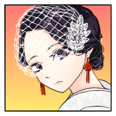
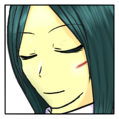
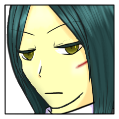
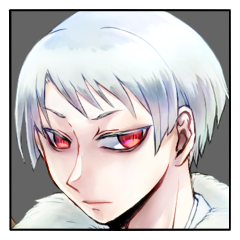
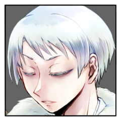
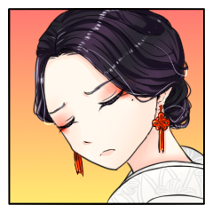

メインフェイズ サイクル3
メインフェイズ サイクル3 百々坂 瞠
百々坂 瞠
かくして矢の如くに『八十神』の下より放たれる、黒影ひとつ。
百々坂 瞠
向かう先は迷いなく一筋、その様もまた一矢に似て、
軌跡もまた、奇しくも先の火矢を追うが如く。
月光の下、祭壇へと至る。
百々坂 瞠
革靴が石段を叩く硬質な音。
その主が顔を上げれば、見覚えのない紅、一つ。

三榊 琴梨
はっと、気配の方に顔を遣る。
目を大きく見開いた。
三榊 琴梨
ぱたぱたと、駆け寄る。
大した怪我ではなさそうだが、この状況下、何も油断はできなかった。
百々坂 瞠
「やはり戻っていたか。
この八千矛殿の元だ、万が一にも傷つけられるなどとは思わなかったが」
百々坂 瞠
駆け寄ってくるその様をじっと見て、こちらからも一歩だけを踏み出す。
近づけば近づくほど、感じ取れるのは巨大な気配。
葦原 名張
「そりゃどうも。もっとも、ハナから無傷で帰ってきてたがな」
三榊 琴梨
不意に、足を止める。
彼女から、以前までは感じられなかったその気配。
ああ、本当に――
三榊 琴梨
ちら、と『八千矛』を見る。
自分が感じ取れるのであれば、きっと彼も。
百々坂 瞠
止まるその足に、いささか予想外の顔を見せた後。
頬に刻まれた微かな凹凸を指先がなぞる。
葦原 名張
「ああ、そうだ。そう、百々坂サンが隠してた……ってのも変だな。その『神器』のことは、全員が知るところになってんだ」
葦原 名張
「これだけの忍がそろってりゃ、小さな綻びから気付くだろ？」
百々坂 瞠
「やはりか。『八十神』もまた感づいていた」
百々坂 瞠
「……だが、私は本当に何も知らなかったさ。
知らないものを述べられはしない。
あの場で述べたことは嘘ではないよ、『八千矛』よ」

百々坂 瞠
「それに、貴殿ほどの忍びであれば。
この夜のうちに気づくだろうとは思っていた」
葦原 名張
「それくらいはわかってるよ。ありゃ俺の聞き方が悪かった」
三榊 琴梨
「……お姉さまは、そんな大事なことを隠すようなひとではありません」
三榊 琴梨
きっぱりと。
瞠が言うよりも、それは強く。
葦原 名張
それこそ俺を試す意図の方が大きかっただろう。
百々坂 瞠
ほんの数分、いくらかの空間を隔てただけで。
こんなに直ぐな信を向けるものがある。
葦原 名張
「おっと、もちろん百々坂サンが嘘を言ってたわけじゃないのは認めるぜ」
三榊 琴梨
「わたくし、『八千矛』様もみだりに人を疑うようなお方だとは思っておりません」
三榊 琴梨
「でも、主張しておきたかったのです。
お姉さまはそんなひとではない、と」
三榊 琴梨
「いいえ、お姉さま。琴梨は当然のことを申し上げたまでです」
葦原 名張
両手を小さく上げて降参のジェスチャー。
三榊 琴梨
「……な、何かおかしいことを言いましたか」
葦原 名張
「いやぁ、なに、気にすることじゃあない」
百々坂 瞠
「何もおかしくはないさ。おかしくないからこそ、そういう顔をすることもある」
葦原 名張
「そういうこった。百々坂サンはお見通しだねぇ」
百々坂 瞠
「いいや？ 私にもまた、見通せない……できていないことはあるさ」
三榊 琴梨
「……『八千矛』様。琴梨は『姫君』なのですから、ご弟妹と同じように思われては困ります」
三榊 琴梨
拗ねたように顔を背けるのは、きっとその弟妹と変わらない仕草であった。
瞠の言うことには、素直に、「そうですか」と頷くのだけれども。
百々坂 瞠
そう述べて。
愛らしい妹分の仕草を目に留めて後、視線は『八千矛』へ向き直る。
葦原 名張
「ああ、ちょうど俺も『姫サマ』も、ミステリーの謎解きみたいにわからないことがあってね」
葦原 名張
向けられる視線を合わせ、わずかに目を細める。
三榊 琴梨
見通せないこと。できていないこと。
瞠のその言葉に顔を上げたが、かち合う二人の視線に口を噤む。
百々坂 瞠
「状況は同じということか。
私もまたそうだ。理解したいことはあれ、あまりにピースが足りていない」
三榊 琴梨
瞠の言う通り。
『八千矛』――否、『葦原 名張』のことは、まだ何も分かっていないに等しい。
面持ちが、僅かに固くなる。
百々坂 瞠
「して、状況が分かったとしても……
此度の『八十神』は手練れだ。おそらくは、思う以上に」
百々坂 瞠
神器が神器たることを示した綻び。
一目でわかるその傷を刻んだ相手など、ただ一人でしか有り得ない。
葦原 名張
「そうだな。そもそもここに飛んだ時に、あの格好で真っ先に姿を消せる時点で相当な使い手だろ？」
三榊 琴梨
「……わたくしが言うのも何ですけれど。
地の利があるとはいえ、お二人に気づかれずわたくしを拐かしたこと。その点も、見逃せませんわね」
百々坂 瞠
「その通り。
それでいて、矢術も相当なものだ。私の術が及ばないほどに」
葦原 名張
「なるほど。そりゃ骨が折れそうだ。負けてやるつもりはこれっぽちもねぇが、そりゃ向こうも同じか」
百々坂 瞠
琴梨のその驚愕ももっともだ。それを最も実感したのは、他ならぬ自分。
葦原 名張
「ましてやここは『八十神』の地元だしな」
百々坂 瞠
「……『八千矛』よ。ひとつ貴殿を試させてほしい。
この場でかの技を最も知るのは、二度相対した私だ」
三榊 琴梨
最も身近な者の、手練れの術が効かなかった、という事実に表情がいっとう険しくなる。
百々坂 瞠
「私から一本を取るだけで構わない。
葦原の序列第一位の技、こちらも本気で受けるわけにはいかないさ。
それに、余計な消耗をさせるわけにもいかない」
百々坂 瞠
祭壇のうち、空間のある方へ歩み出る。
手で静かに、琴梨へ下がるよう促す。
三榊 琴梨
「……お二人とも、お怪我の無いようにしてくださいませね」
自分が言うまでもなくそうなるのだろうけれど、つい、心配が口を衝く。
それから、大人しく下がった。
葦原 名張
地と履物が音を鳴らす。
双眸は目前の使い手を射貫くように向けられている。
葦原 名張
手合わせと言えど、自分が試される側だ。
百々坂 瞠
たおやかな声に微か、口元を緩める。
静かにその声に頷いて、
百々坂 瞠
その存在が意識から消える。
己を射抜く目を、静かに睨み返す。
百々坂 瞠
先んじて地を蹴るはこちら。
前傾姿勢から、腰元へ手刀を一太刀。
百々坂 瞠
情報判定を行います。
目標は名張さんの【秘密】、特技は骨法術。
百々坂 瞠
2D6>=5 （判定：骨法術） (2D6>=5) ＞ 12[6,6] ＞ 12 ＞ スペシャル(【生命力】1点か変調一つを回復)
葦原 名張
鋭い踏み込みと手刀。
それに対して柳のように滑らかな動きで力の向きを変える。
葦原 名張
大きな体と大きな手足。それに対して繊細で流麗な、無駄のない動き。
葦原 名張
しかして、その視線は手刀の手先ではなく、相対する使い手の全身を見据えている。
葦原 名張
いなしたと同時、添えた手から流れるように手刀を返す。
百々坂 瞠
流れる力に一切を逆らわずして方向だけを変える、骨法を知り尽くしたその動きに、感嘆する暇もない。
百々坂 瞠
こちらの技もまた、この場に至って更に冴え冴えと。
これもまた目覚めつつあるものの断片か、そんな思考は埒外。
その技さえも届かぬというなら。次の動きを巡らすは、頭より体が先んじて。
百々坂 瞠
変えられた力の流れに逆らわずして、その場で方向だけを変え。
その動きのまま足にて一撃、
その動作が成される前に、
己のものでない手刀が背を突く。
百々坂 瞠
途端、動きがぴたりと止まった。
至近であれば寸止めと呼ばれる動作を、それよりもずっと早く。
百々坂 瞠
「……流石は『八千矛』を務める勇士。
試すなどと言った方が驕っていたか」
葦原 名張
「……いやいや、大した使い手だ。危うく手合わせってことを忘れるところだった」
三榊 琴梨
呼吸をするのも忘れる程、二人の忍びの冴え渡る動きに見入っていたが、やがてほうと息を吐いた。
百々坂 瞠
改めて体勢を整え、先まで技を交わし合っていた相手へ再び向いて。
百々坂 瞠
「改めて。
……貴殿に伝えるべきことがある、『八千矛』」
百々坂 瞠
「解かれる謎にはいつも、痛みが伴う。
ミステリーとは多くがそういうものだ」
百々坂 瞠
「しかし貴殿ならば耐えられよう。
改めて、そう思うに至ったよ」
葦原 名張
「謎として存在するのであれば、それは解かれるべきものでもあらぁな」
葦原 名張
「そして、それに応えるのも、また役目だ」
百々坂 瞠
「……貴殿のその大器に、いまいちど、頼らせてくれ」
百々坂 瞠
こちらから：PC2の秘密
名張さんから：PC2の例のものの秘密 で交換を申し込みます。
GM
琴梨の秘密→例のものの秘密で順番に公開していきましょう。
【秘密：三榊 琴梨】
あなたはその身に神器を宿して生まれてきた。八千矛はあなたの神器の封印を解くものであり、そしてそれはすなわちあなたを娶る定めにある者だ。あなたは儀式『神楽八十神追』が国守の儀式であると共に、婚姻の儀式だと教わってきた。しきたりにより八千矛を一目見ることさえ許されていなかったが、その宿命を受け入れている。もとよりそれを受け入れなければ、封印されたままの神器があなたを殺すことを知っているからだ。
あなたはプライズ『神器』を持つ。
クライマックスフェイズ開始時まで神器が封印されていた場合、あなたは即座に死亡し、神器は消滅する。
あなたの本当の使命は『神器の封印を解いてもらうこと』だ。
【秘密：生大刀】
このプライズ『神器』の本当の名前は神器『生大刀』だ。
このプライズは封印されているかぎり、戦果で奪うことはできない。
このプライズの封印が解かれたとき、このプライズが封印されていた者の使命は封印を解いた者の使命に書き換えられる。その際、このプライズが封印されていた者は、所持するすべての感情属性を再度決定し直す。
このプライズを所持（封印されている状態を除く）しているものは、クライマックスフェイズ、毎ラウンドに一度、神通丸として使用できる。（使用してもこのプライズはなくならない）
GM
>クライマックスフェイズ開始時まで神器が封印されていた場合、あなたは即座に死亡し、神器は消滅する。
補足ですが、こちらに関しましてはPC4にも適用されます。
百々坂 瞠
「私もまたそうだったよ。
言うべき何も出はしなかったさ」
百々坂 瞠
「琴梨。
私はきみの重責の、その質を……ずっと見誤っていたんだな」
三榊 琴梨
沈黙を保っていた彼女が口を開けば、凛とした声。
三榊 琴梨
「幼き頃からその運命を受け容れてきました。
今になって、そのことを嘆くつもりはございません。
お姉さまと『八千矛』様が、心を痛めることはないのです」
三榊 琴梨
逡巡は、瞬く間に夜闇に紛れる。
月光に照らされたその顔は、たおやかな『姫君』のものではなく、
三榊 琴梨
「まさかお姉さまの身にも神器が在るなんて、そんなこと夢にも思いませんでした。
……神器は、人の身に余ります」
三榊 琴梨
「琴梨は、お姉さまに何かあったら……」
三榊 琴梨
そして、そこで口を噤んだ。
何も言えなくなった、というのが正しいかもしれない。
百々坂 瞠
「……確かに、神器を最も知るのは、この場ではきみだろう。
だがそれこそ、きみが心を痛める必要などない。
きみも、……そして私もまた、あずかり知らなかったことだ」
葦原 名張
思わず『八千矛』であることを忘れて言葉を漏らしそうになるのをぐっと抑え込んだ。
この場には『姫君』である三榊 琴梨も居るのだ。
三榊 琴梨
神器が二つ在ること。
それは、この儀式を万全にするためのものなのだろうか、と思う。
『姫君』に何があろうとも、国守の儀式を完遂させる。保険はあればあるほどいい。実に合理的で正しく思う。
三榊 琴梨
今まで『姫君』として生きてきた自分は何だったのか？
とも、一瞬思った。
多くのものを投げ打ち、諦めた。そんな人生。
三榊 琴梨
けれども、それ以上に。
それ以上に強く思うのは。
三榊 琴梨
「……琴梨から、お姉さままで取らないで」
三榊 琴梨
ほんの小さな、小さな呟き。
堪えようとして堪え切れず、漏れ出てしまったそれを、悔いるように目を伏せた。
百々坂 瞠
そのあまりにも素直な、およそこの場には似つかわしくない吐露に。
ひとつ、思い起こすことがある。
百々坂 瞠
「……『八十神』が言っていたよ。
堅洲の鬼とは、それを造り上げた比良坂（わたしたち）だと」
百々坂 瞠
「今となっては返す言葉もない。
抜け出せぬ網を、足を取る泥を作ることこそが私たちの得手だったが、
囚われているのもまた私たちだった」
百々坂 瞠
「私には、それが、きみなんだ。
琴梨」
三榊 琴梨
伝えられた『八十神』の言に、はっと目を見開く。苦々しい表情を浮かべる。
その言葉はもっともだ。言い返すことなどできはしない。
三榊 琴梨
けれど、続く言葉に。
いよいよ泣き出しそうに、顔を歪めてしまう。
百々坂 瞠
「……私は、昔からそのきみの我が好きだった。
ただ粛々とした『姫君』であるだけではない。
確かな望みを持つきみと、微かなりそれを叶える手助けのできることが」
百々坂 瞠
「……この場でまで。
きみの望みになれて、私は幸せ者だよ」
百々坂 瞠
この企てを知っていれば、それこそ粛々として儀を組む側に回ったような。
網と泥の具現のような女が、
これほど純粋な心を向けられることを、他に何と呼べばいい。
三榊 琴梨
言いたいことは山のようにあるのに、二の句が継げない。
泣くことだけは堪えた。
それが『姫君』としての立場を守る、精一杯だった。
葦原 名張
『八千矛』である、葦原 名張は言葉を発さず思案を巡らせる。
共に長い時間を過ごし、血が繋がらなくとも姉妹の情を分け合い、その身にそれぞれ神器を宿した2人。
三榊 琴梨
「お姉さまと出逢えたこと、嬉しく思っています。決して、後悔はしていません」
百々坂 瞠
その目に揺れる、月光を散らす薄膜。
今にもそれの散りそうな顔でなおも笑ってみせる様子に、かける言葉は。
百々坂 瞠
「ありがとう、琴梨」
「……きみがいま、そう思ってくれること。それを言葉にしてくれること。
私は……何よりもうれしく思う」
百々坂 瞠
忍びの関係が明日をも知れぬことなど、知りすぎるほど知った。
この月の上る前に、このようなことになるなどとは露ほども思わなかったように。
そしてこれからも、きっとそうだと分かっている。
百々坂 瞠
だがここにある今は、誰に変えられよう。
そしてこの今がどれほど快くとも、
そこに留まれはしない。
百々坂 瞠
「琴梨。きみが知らなければならないことは、まだある。
……聞いてくれるな、『姫君』として」
百々坂 瞠
どこまでも卑怯だ。
この網に共に絡められるものでありながら、
そう聞けば頷くしかないことを誰よりも知っている。
そしてそれを振るうことに未だもって躊躇もない。
百々坂 瞠
名張さんの【秘密】を琴梨さんへ譲渡します。
GM
了解しました。
琴梨から野葛に情報共有が発生し、公開ですね。
【秘密：葦原 名張】
数千年、代々繰り返されてきたこの儀式。国守のためのみならず、あなたの代で果たし損ねるわけにはいかない。儀式の手順は熟知している。姫君に祭具『羽喫鳴鏑』を渡し神器『生大刀・生弓矢』の封印を解き、『八十神』を討つ。それだけだ。
しかし、儀式を執り行い始めてから気付く。何やら神器に異変が起きており、本来あるべき状態ではないと気配で気づいてしまった。それでも始まってしまった儀式を止めることは出来ない。
あなたはプライズ・祭具『羽喫鳴鏑』を持つ。
プライズ・祭具『羽喫鳴鏑』は感情判定の際に、対象に祭具を手渡すことを宣言すると、感情判定を判定なしに成功する。そうしたとき、対象が神器を所持していた場合その封印を解き、獲得する。神器の封印を解いたとき、このプライズは消滅する。
GM
補足：このプライズに秘密はありません。読みは『はばみなりかぶら』です。
百々坂 瞠
「……あるいは。
きみにももはや、感じ取れるかもしれないな」
三榊 琴梨
「――はい」
しっかりと頷く。泥と網に足を取られることを分かりながら。
三榊 琴梨
それでも良かった。
覚悟はしていたし、瞠もまた、強き忍びであることは、よく分かっている。
三榊 琴梨
それに。
『琴梨』として、『瞠』の言葉をちゃんと聞いて伝えられたから。
後悔は無い。今までも、これからも。
三榊 琴梨
――告げられたそれ。
『姫君』が、『八千矛』を見る。
葦原 名張
『八千矛』はまだ口を開かない。
世界を救うための儀式が『姫君』との婚姻の儀であるだけでなく、その儀式を成立させるために、己の選択で必ず失われる命を選ばなければならない。
葦原 名張
さりとてなにか言葉を漏らしていたとしても、ここまでの時間で交わした言葉から、己が何を決めるべきかははっきりしている。
それは今後も揺らぐことはない。
葦原 名張
否、揺らがせてはならない。
それは『姫君』たる三榊 琴梨の言葉も、神器を宿す百々坂 瞠の言葉も、『八千矛』でもあり葦原の筆頭である俺の言葉を裏切ることになる。
葦原 名張
それは覚悟も人生も否定することになる。
葦原 名張
「……俺にできることは、そう多くはねぇ」
葦原 名張
「……どれだけ考えてみても神器を持つ2人を救うこともできねぇし、当然儀式を中断するなんてありえん」
葦原 名張
「俺のオヤジにもジイさんにも、当然比良坂にも言いたいことはあるが……」
葦原 名張
選択の余地がない状況で、重い選択を強いられる。
なにもかもが不愉快で腹立たしい。
それでもこの儀式に参加するすべての忍のために、世界のために、決断を下せるからこそここに居るのだ。
葦原 名張
「俺は三榊 琴梨を『姫君』として儀式をやりとげると誓おう」
三榊 琴梨
張り詰めた空気の最中に挟まれた一拍の間に、目を瞬かせる。
三榊 琴梨
琴梨に告げられた誓いに、楚々として首を垂れる。
三榊 琴梨
役目を、果たす。
眼前の彼もまた、理不尽に重い決断を迫られ、下した。
ああ、『八千矛』として、なんてこれ以上ないひとだろう！
三榊 琴梨
役目を、果たす。
否――彼と彼女の、決意に報いる。
それが唯一、できることだ。
百々坂 瞠
頼まれた。
その言葉でかすかに上がった口角は、ふたりの宣誓の終わればなおはっきりと。
百々坂 瞠
『八千矛』よ。
よくぞこの場に至ってくれた。
『姫君』よ。
よくぞこうまで育ってくれた。
百々坂 瞠
そうしてよくぞ選んでくれた。
今だけは、この呪縛じみた『神器』にも少しは礼を言える。
この場を見届ける、その役目を務めることができた理由なれば。
だがそれは例外にすぎない。
この場にいるはずもないものなど、最初から顧みられる道理もない。
それはどこまでも、正しいことだ。
百々坂 瞠
「その誓い、確かに聞き届けた」
「儀に縁なきものなれど。
故にあるべからざる第三者として。私はその誓いがなされたことの証人となろう」
百々坂 瞠
「この日の本を託す、儀を織りし比良坂機関の末裔として」
葦原 名張
「心得た。鞍馬神流魔血葦原家が当代『八千矛』葦原 名張、『姫君』にかけられし神器の封印を解き、その神器をもって『八十神』を討ち果たそう」
三榊 琴梨
「比良坂機関、醜女衆が末席、三榊 琴梨。
『姫君』として『八千矛』を誠心誠意支え、命果てるまで共に在ることを誓います」
メインフェイズ サイクル3 爾甁粢 野葛
爾甁粢 野葛
暮明に似合わぬ穏やかな空気。
将来を見据え、互いに誓いを交わす平穏の時間。
その中を割り入り、裂くように。
爾甁粢 野葛
彼らの足元へ、一本の矢が撃ち込まれた。
その根元には、紙片が結ばれている。
葦原 名張
誓いを立て終えるといつもの声色に戻っている。
葦原 名張
突き立った矢に結ばれた文。
『八十神』からに違いなかった。
三榊 琴梨
誰からの、とは言わない。
『八十神』のものであろうことは、こちらもまた確信している。
百々坂 瞠
その風切り音には十二分の覚えがあった。
何も問うことなく、ただ『八千矛』の手の内にある文へ視線を向ける。
葦原 名張
「俺が先に開いてもいいもんかね？宛名が書いてあるが」
三榊 琴梨
驚く様子はない。
脳裏に過るのは、あの時の『八十神』とのやりとりだ。
文を受け取り、中を開く。
爾甁粢 野葛
【『姫君』を待つ。
他の者の同行は無用。
従う限り、害を加えることは無い。】
紙片には、祭壇を中心とした簡易な地図が描かれて
ある一点に印がつけられていた。
それは堅洲の里の外れを指し示している。
三榊 琴梨
「『八十神』は、わたくしと話をしたいようです」
二人にもその内容を見せる。
百々坂 瞠
その文面と、書き記された地図に目を走らせ、いささか意外そうな顔をする。
そうして二度三度、同じ動きを繰り返す。
葦原 名張
「当たり前のことを言やぁ、行ってくれるなになるんだが……」
三榊 琴梨
「ええ。"話"だと思います」
文にはそう書いていないが、あえてそう言った。
あの男は、何度もそう言っていたから。
百々坂 瞠
「『話』か。
……聞くまでもなくよく喋る男だったろう？」
三榊 琴梨
「ふふ。心配してくださって嬉しゅうございます」
三榊 琴梨
「……そう……かも、しれませんわ」
瞠へ返す言葉は渋く。
三榊 琴梨
「……いえ。琴梨は今、誤魔化そうとしました。
実のところ、『八十神』とあまり会話はしていないのです。
……琴梨は攫われたものですから。『八十神』は討つべき敵でしょう？
ですから、つい、こう……」
三榊 琴梨
具体的には言わないが、察するのは容易だろう。
百々坂 瞠
浮かんだ笑いは声にはならない。
だがそれも、寸でのところでだ。
百々坂 瞠
「実に正しい対応だ。
きみ自身でもって危機を退けることができれば、それは最良だよ」
百々坂 瞠
「そうして……
おそらく『八十神』が最も苦手とするのは、そうした対応だ」
三榊 琴梨
実に正しい対応だったそうです。
お姉さま仕込みの骨法ですから。えへん。
三榊 琴梨
「そうなのですか？」
苦手とするもの、にやや意外そうに目を丸くする。
百々坂 瞠
危機を自ら脱する強き『姫君』。
半ば確信してはいたものの、その功績を聞けたことに内心でいくらか鼻を高く。
百々坂 瞠
「こちらが話せば話すほど、実によく喋る御仁だったよ。
『八十神』は私たち比良坂機関を深く憎み、その上でよく見ている。
私の術を打ち破ったのも、その探求あってのことだろう」
百々坂 瞠
「だが、おそらくは……
その手掛かりは、この堅洲の中で目にできるものでしかないはずだ」
百々坂 瞠
「醜女衆がこの里に来る理由は少ない。
『八十神』は比良坂を知っていても、
きみたちの技も、またきみたちの気概も知らなかったのではないか」
三榊 琴梨
「……なるほど。
確かに……呆気に取られた、というか。想定外だと言わんばかりだったような……」
三榊 琴梨
「ま、まあ、その、ですから。
琴梨ひとりで行っても、きっと大丈夫です。
あの『八十神』は、卑劣なことはしないでしょう」
と、主に名張に言うように。
三榊 琴梨
「わたくし、武術なら名張様にも負けない自信がありましてよ」
ぐっと拳を握ってみせた。
百々坂 瞠
その動作を、どこか楽しげに目を細めて見遣った。
葦原 名張
「そりゃあ、百々坂サン直伝ともなりゃ、俺も危ういだろう」
葦原 名張
「俺は相対したことはないが、2人がそう言うなら『八十神』のことを確かめに行ってもらうのがいいか」
葦原 名張
「……まぁ、もしかしたらまたお怒りのご様子で帰ってくるかもしれねぇが」
三榊 琴梨
「その時は名張様も怒ってくださいますよね？」
三榊 琴梨
応えるよう、深々と礼をし――
『姫君』の姿は夜闇に消える。
爾甁粢 野葛
――地を駆けて。
『姫君』は文に記された、場所に辿り着く。
爾甁粢 野葛
ここは、里の者たちが眠る墓地。
一隅にはかつて儀式に臨んだ忍び達の墓があり、
あとは石を乗せ、字を刻んだのみの粗末な墓が並ぶのみ。
爾甁粢 野葛
そんな陰鬱な空間の中に、立つ白い影が一つ。
爾甁粢 野葛
「…どうやら、一人で来たようだな。」
爾甁粢 野葛
近付き来る姿を認めて、ゆらりと動く。
三榊 琴梨
「随分な雰囲気の待ち合わせ場所ですのね」
三榊 琴梨
『姫君』はひとり、『八十神』と向き合う。
爾甁粢 野葛
「……空気など、どこであろうと変わらん。
ただこの場所が都合が良かったまでだ。」
爾甁粢 野葛
「お前には話と……
その前に、渡す物がある。」
爾甁粢 野葛
「先の時のように…
近付くなり、拳を見舞ってくれるなよ。」
言いながら、傍へ寄ろうと歩を進める。
三榊 琴梨
「受け取るとは限りませんけれど」
声色は固いが、構える気配はない。
話をしに来たのだ。
爾甁粢 野葛
「……この面が嫌いか？
あの時も、随分と手酷く打ち据えてくれたものだ。」
構えずも警戒を露わにする様に、一度立ち止まる。
三榊 琴梨
「それは違います。
わたくし、虫は不得手ではありませんの」
三榊 琴梨
「……逆に、あなた様こそ。
どうしてわたくしを前にして、命を奪おうと思わないのですか」
爾甁粢 野葛
「だろうな。
不得手であれば、避けるか遠ざけようとするものだ。
正面から叩き潰す様な真似はしない。」
三榊 琴梨
単純に、『八十神』と『姫君』。
敵対する立場であり、『八千矛』に神器を授けるものだ。
今回はともかく、最初のあの時。なぜ自分が、無傷で帰れたのか。
爾甁粢 野葛
「…お前を殺そうと思わない理由は二つ。
一つは、お前には生かしてこその価値があるからだ。
新たな国主神には相応しき伴侶がいる。
儀式の形に則り、立つ場所を乗っ取ろうと思うのならばな。」
爾甁粢 野葛
己の顔を覆う布地に手を当てて、
掴み、そして引き上げる。
爾甁粢 野葛
「お前を…哀れに思うからだ。
我らと同類に落とされ、その生と死を恣にされる『姫君』をな。」
爾甁粢 野葛
夜の明かりに照らされた肌は、まるで透き通るが如く。
さががら月のように白い顔が現われた。
爾甁粢 野葛
そのまま足を前へ、彼我の距離を詰めようと。
三榊 琴梨
瞠が、『八十神』は比良坂を知っていると評したのに納得がいった。
なるほど、確かに比良坂は形式を重んじる。意趣返しと言うべきそれに。
三榊 琴梨
「いえ……
爾甁粢様、とお呼びした方がよろしいですね」
三榊 琴梨
「あなた様のやり方が最悪だったことは譲りませんけれど」
三榊 琴梨
「先刻、話、と言っていたのにそれを聞かなかったこと」
三榊 琴梨
「……あなた様のやり方は、本当の本当に最悪でしたけれども」
三榊 琴梨
「あなた様のその情に、感謝いたします」
『八十神』ではなく、爾甁粢 野葛の、それに。
三榊 琴梨
「哀れまれるようなことは何も無いのです」
三榊 琴梨
「確かにわたくしは、哀れな身かもしれません。
けれど、わたくしは……ずっと、決めているのです」
三榊 琴梨
その決意は今し方、十分に固めてきたところだ。
三榊 琴梨
ゆえに、『姫君』として。
『八十神』が未だ隠すそれを、月下に照らす。
それが今の役割だ。
三榊 琴梨
近寄られることを拒みはしない。
否、この間合いは望むところだ。
三榊 琴梨
骨法術で野葛さんの秘密を抜きたいです。
三榊 琴梨
2D6>=5 （判定：骨法術） (2D6>=5) ＞ 6[3,3] ＞ 6 ＞ 成功
GM
こんな出た！！ になる卓なかなかないよ。
共有はなし、お送りしますね。
爾甁粢 野葛
「……そのようだな。」
小さく、呟くように言って。
爾甁粢 野葛
「手向けの花のつもりだったが…
どうやら無用のようだ。」
爾甁粢 野葛
「…俺は、非礼を侘びるつもりはない。
あれはあの場において最善の方法だった。
その後のお前の反応が、予期せぬことだったとしても…だ。」
爾甁粢 野葛
「…その花もいらぬというなら、好きにしろ。」
三榊 琴梨
「せっかくですけれど、琴梨には必要のないものです」
三榊 琴梨
「でも、その……ええと、せんす。扇子ではなくて。……分かります？
選ぶ花の品の良さは、好ましく思います」
三榊 琴梨
「琴梨より、その花を必要としている方が、いるかもしれませんから」
爾甁粢 野葛
「……その気遣いは無用だ。
今朝、同じ花を母の墓前に供えた。」
爾甁粢 野葛
「俺が死ねば…いずれ墓も朽ちるに任せることになる。」
爾甁粢 野葛
男のやや後方、
粗末な墓の傍らに白い花が一輪。
月光の下に、その身を横たえている。
三榊 琴梨
手入れされていない墓。
堅洲の里の勇士であっても、死ねば顧みられないのだろうか。いや、勇士だからこそ、なのか。
三榊 琴梨
その死を招くのは我々だ。
覚悟は確かに、この胸にある。
三榊 琴梨
「哀れだとは言いません。
けれど、わたくしたちは、あなた様を討ちます」
爾甁粢 野葛
「…憐憫など求めてはいない。
俺の双肩には、里の民の命運が背負い込まれている。」
爾甁粢 野葛
「…かつて我らは血を啜り活力として来た血族…とされていたらしいが………」
爾甁粢 野葛
「かの昔に比良坂が我らを里に囲い込んだ際、
奴らは我らに人の血を啜ることを許さず、獣の血のみを許した。
粗に野に汚れた血のみを、な。」
爾甁粢 野葛
「そうした環境が遥か昔より続いた結果……
我らの肉体は、見るも脆弱なものとなった。」
爾甁粢 野葛
「長きに渡り不浄の血を啜った我らは、もはや人の血を受け入れることも出来ない。
種として…既に滅びの道が定まっている。」
爾甁粢 野葛
「この儀式にて勝利が成らぬならば……
遅かれ早かれ、な。」
爾甁粢 野葛
「…お前の信じ、縋る物に関わらず……
俺はお前を、新たな国作りの『姫君』として攫うことになるだろう。
箱庭に押し込み、錠を下ろし、ただひたすらに囲い生かすことになる。」
爾甁粢 野葛
「…堅洲の里の者たちは……
お前が国母となった後も怨嗟を叫び、お前に復讐を望むだろう。
俺には、それを止めることは出来ない。」
爾甁粢 野葛
「……覚悟を、しておくことだ。
この儀式と戦いの先に在るものを、な。」
三榊 琴梨
ああ、本当に。
この日の本の平和は、犠牲の上に成り立っているのだと。
その業を実感する。
三榊 琴梨
当事者が語るのだ。
これほどまで、切に迫るものはない。
三榊 琴梨
それを切り捨てる覚悟を求められている。
その覚悟はあるか？
三榊 琴梨
「慈悲深いのですね。とても」
わざわざ忠告をするなんて。
三榊 琴梨
「ですが、そうはなりません。
わたくしたちは『八十神』を討ちます。
そして、堅洲の里が滅ぶことも変わりません」
三榊 琴梨
はっきりと、告げた。
迷うことはなかった。
『琴梨』として、決意に報いると決めたのだから。
三榊 琴梨
迷うことはない。
この業だって、背負ってみせる。
それに、きっと、ひとりではないのだから。
爾甁粢 野葛
「…言った筈だ。
こんなものは、ただ哀れに思っただけのことだ。
お前もまた…贄として捧げられた存在だと見ればこそだと。」
爾甁粢 野葛
「…俺は、お前に告げた通りに全てを行う。
例え伴侶となれども、決して愛する事は無い。」
爾甁粢 野葛
「それが、俺の責務であり……
それこそが、俺の業であるからだ。」
爾甁粢 野葛
それだけ告げると、小さく息を吸い込み。
気丈に立つ姫君から、一歩だけ離れる。
爾甁粢 野葛
「…問おう。
お前は何を信じて儀式に臨み、『姫君』の役目を全うする？」
三榊 琴梨
頷きも首を横に振ることもしない。
ただ、真剣な面差しで『八十神』の話を聞いていた。
三榊 琴梨
向けられた問い。
答えは、打てば響くように。
爾甁粢 野葛
「……そのために、あの女……
儀式の異物たる、神器の女を犠牲としてでも…か？」
爾甁粢 野葛
「…俺はあの女には、何らの感情も抱かない。
アレは比良坂の信念の顕現だ。
比良坂が形を取ったような存在だ。」
爾甁粢 野葛
「呵責も憐憫も、妬みさえも無い。
ただ嫌悪だけがある。」
爾甁粢 野葛
「お前が潔く死するべきというなら……
そのまま死なせてやっても良いがな。
奴とて、隠忍に良いようにされるのは屈辱だろう。」
三榊 琴梨
「そうでしょうね。
あの方はきっと、あなた様方が最も忌むべき忍でしょう」
比良坂の忍として琴梨はそれを誇らしく思うが、事実として、彼らにとってはそうだろう。
三榊 琴梨
「……それは、琴梨が決めることではありません」
三榊 琴梨
「戦いの前に。
『爾甁粢』様ももう一度、お姉さまと話してみてはいかがです」
三榊 琴梨
「さすれば、すべて分かるでしょう。
わたくしとこれ以上話すより、余程有意義に思います」
爾甁粢 野葛
「……その結果として、
お前の知らぬ所で命が果てることになっても、か？」
三榊 琴梨
「それでも……それでも、こればかりは」
三榊 琴梨
「琴梨が決められることではないのです」
三榊 琴梨
「……ひとつだけ、琴梨から言えることは」
三榊 琴梨
「もし、その花が必要な方がいるのなら」
三榊 琴梨
「どうか、……どうか、大切にして差し上げてほしい」
爾甁粢 野葛
「……わがままな娘だ。
俺がその願いを聞いてやると、どうして思うのか。
理由を聞くのもバカバカしい……」
爾甁粢 野葛
「お前は、国の平和を望むと言ったが……
我々には、世界を見渡す目が無い。
生まれた頃より知るのは、この狭き箱庭の中だけ。
護る世界など、初めから有りはしないのだ。」
爾甁粢 野葛
「…お前が相対しているのは、そういう相手だ。
そのことだけは忘れるな。」
爾甁粢 野葛
「……ふん。
お前にも、この花が似合うと思ったのだがな。」
爾甁粢 野葛
手に持つ花を、高く掲げて。
そのまま胸の中に、仕舞い込む。
爾甁粢 野葛
「…話は終わりだ、比良坂の『姫君』。
次に相見える時は…もはや容赦はしない。」
爾甁粢 野葛
「……くれぐれも、覚悟をしておくことだ。」
爾甁粢 野葛
「俺が新たな国主神となった暁には……
味噌樽いっぱいのふらぺちいのくらいは用意してやろう。
お前に対する、せめてもの情けとしてな。」
三榊 琴梨
ずきりと刺すような痛みを感じる。
『爾甁粢 野葛』はなんと慈悲深く、気高く、憐れなひとなのか。
三榊 琴梨
けれど、『八十神』は討たなくてはならない。
三榊 琴梨
「どうか、その方を見て差し上げてくださいませ」
三榊 琴梨
そう言って、月明かりに紛れるように。
『姫君』は音もなく消えた。
爾甁粢 野葛
「…互いの血が混じり合えば……
真っ直ぐに、お前を見れる日が来るのかも知れないな………」
爾甁粢 野葛
既に周囲の気配も見えない静寂の中。
ぽつりと呟く声が、闇の中に溶けて消えた。
GM
同じ白さの花だけが、闇の中に取り残されている。
メインフェイズ サイクル3 情報交換シーン
三榊 琴梨
名張さんと瞠さんに、野葛さんの秘密を譲渡いたします。
【秘密：爾甁粢 野葛】
数千年にも及ぶ屈辱の末、ついに綻びが起きる。儀式に使用され消滅するはずだった祭具『羽喫鳴鏑』を先代の八十神によってどうにか残され、今はあなたの手元にある。今回の異常はそれによって引き起こされたものだろう。このまたとない機会を無駄にするわけにはいかない。
あなたはプライズ・祭具『羽喫鳴鏑』を持つ。
GM
青白い月はさやけきままに、森をゆく姫君の足跡を照らす。
三榊 琴梨
月明かりに導かれるよう、また祭壇に、彼らのもとに戻ってくる。
外傷はないが、その表情は固い。
百々坂 瞠
『姫君』の去ったその後より、瞑想するように伏せていた眼を、その足音に応じて開く。
三榊 琴梨
笑顔を作る。
しかし、すぐにまた表情が強張った。
三榊 琴梨
「……ええ。『八十神』と、話をしてまいりました」
葦原 名張
「……で、『八十神』はなんて言ってた」
三榊 琴梨
「お話しすべきでは、ないのです。
絶対に」
葦原 名張
前置きの時点で、三榊 琴梨としては話す必要があるともとれる。
葦原 名張
「……俺も『八千矛』ではなく葦原 名張として聞いておきたいね」
三榊 琴梨
そう、『姫君』としては。この儀式の成就を第一に考える身としては。
決して話すべきことではない。
三榊 琴梨
それでも。
『三榊 琴梨』にとっては――
三榊 琴梨
「……『八千矛』様。申し訳ございません。
お叱りは、後程お受けいたします」
百々坂 瞠
「きみはそうして、『姫君』としての立場と、己を分けて考えることができる」
百々坂 瞠
「私にとっては、それで十分だ。
その後に何らの心配もない」
葦原 名張
礼を告げる。それだけ。
ただゆっくりと琴梨の口が開くのを待っている。
三榊 琴梨
深く、深く。
言葉を噛み締めるように、礼をするように頷いた。
三榊 琴梨
改めて決意したように、二人を順に見遣る。
三榊 琴梨
「琴梨は、このことを話さないでいたら、この先死ぬまで」
三榊 琴梨
「……いいえ、死んでも。
きっと後悔してしまう」
三榊 琴梨
「……目の前で、果て行く命を見捨てるなど」
三榊 琴梨
そして、話し出すのは――『八十神』の秘密。
祭具『羽喫鳴鏑』が、確かにそこに在るということ。
三榊 琴梨
つまり、神器を解放する手段がもう一つあり。
しかしながら、『八十神』と運命を共にする、ということ。
三榊 琴梨
決意して伝えたはずだが、その表情の苦々しさは取り繕えなかった。

百々坂 瞠
静かに語られるその真実。進み行く内容に応じるように目を細める。
百々坂 瞠
だがそれは、目の前にある苦さと全く同じ質のものというわけではない。
その実感が、瞼に反し微かに上がる口元としてにじみ出て。
葦原 名張
『姫君』としては話せず、『三榊 琴梨』としては話すことができる。
それに足るだけの『八十神』の秘密。
葦原 名張
「……50年前から、今日こうなるのは決まってたのかも知れねぇな」
百々坂 瞠
「そうなのだろうな。
有り得ざる二つの祭具、二つの神器がこの祭壇に並び立つことは」
百々坂 瞠
「それをどのような人物が持つかまでは、祭具と神器の定めの知るところではあるまい」
三榊 琴梨
祭具が二つ。故に神器が二つ。
納得のゆく話だ。
三榊 琴梨
二人を見ている。その唇が紡ぐ言葉を、聞いている。
葦原 名張
「誰かが介入してるなんてもんじゃなかったか」
葦原 名張
「………で、『八十神』も俺と同じように神器の封印を解くことができる」
葦原 名張
僅かに細めた視線をもう一人の神器を宿す女へと向ける。
百々坂 瞠
「そして封印を解かれるべき神器は、この通り二つある」
百々坂 瞠
向けられた視線へ応じるように、軽く側頭へ手を当てる。
葦原 名張
「封印が解かれなかった神器の持ち主は……」
葦原 名張
知れている結論まで口にせず、ふむと息をつく。
百々坂 瞠
形にされなかったその結論に、いま一度声で輪郭を与え直す。
三榊 琴梨
息を呑む。
とうに分かり切っていたことなのに。
けれど、その運命に直面しているのは、今や琴梨だけではないのだ。
葦原 名張
月の光が満ちる祭壇ではその形をごまかすことはできない。
はっきりとした輪郭を4人の忍は認識している。
故に、目をそらすことも許されない。
百々坂 瞠
「二つの神器と祭具が並び立つのが、此度の『神楽八十神追』の定めだったとして。
神器と祭具を誰が持つかまでは、定めとやらの知るところではない。
……幸いここにあるのは、賢く猛き『八千矛』、そして『姫君』だ」
三榊 琴梨
『八千矛』の言葉が瞠に向けられ、口を開く。
続く言葉を遮るように。
三榊 琴梨
「それをどのような人物が持つかまでは、祭具と神器の定めの知るところではあるまい」――先の、そして今も告げられた瞠の言葉がリフレインする。
三榊 琴梨
神器をどのような人物が持つか。
持つべきか。
どのような人物が『姫君』に相応しいか？
三榊 琴梨
……立ち振る舞いは、きっと自分の方が『姫君』らしいだろう。
何せ、そう在るために教育されてきた。
けれど、忍として。人として。
尊敬する瞠の方が、ずっと相応しいように思う。
日ノ本の泰平を成した後、そこに立っているのは――
三榊 琴梨
確かに、思うのに。
唇はそれを紡ごうとしているのに。
三榊 琴梨
言えなかった。
言ってしまったら、先の瞠の、名張の決意が。
無に帰してしまうような気がして。
百々坂 瞠
いかな忍びと言えど読み取れはしない。
続かずに喉の奥で消えた言葉の内容までは。
だがそこに消えた言葉のあったことには、忍びならずとも気づけるだろう。
百々坂 瞠
「……私はいつか。
こんな形でなくとも、きみの過去になる女だったさ。
つつがなく儀式を終えたとして、明日から顔を合わせるかもわからないような人間だった」
三榊 琴梨
「……そんなこと、琴梨は思ってませんでしたもの」
三榊 琴梨
「一度だって、思ったこと、なかったですもの」
三榊 琴梨
駄々をこねている。
こんなことを言っても仕方がないのに。
瞠は、少しでも自分に背負わせないようにしてくれているというのに。
百々坂 瞠
「ふふ。
私は……ずっととは言わないが。
儀が近づくごとに、きみの元を離れることを考えてきたというのにな」
百々坂 瞠
思い起こすのはあの誓いの前。
『姫君』でない、『琴梨』として漏らした小さな呟き。
「……琴梨から、お姉さままで取らないで」
百々坂 瞠
そうだ。
友との交遊、外界の眩さ、世の平穏を享受する誰もが触れるはずのありふれた日常。
自分はそれらを手放した琴梨の手元に残った、数少ない存在の一つだった。
百々坂 瞠
それが今、自ずから離れて行こうとしている。
その苦しみを、計り知るなどとは到底言えはしない。
百々坂 瞠
「だが、私はな。
……同時にずっと、楽しみだったよ」
百々坂 瞠
「きみの隣から私のいなくなるその日が。
きみが、
他ならぬきみの守る日の本の平穏を享受することを許される日なんだ」
百々坂 瞠
「私は、きみに手に入れてほしい。
これまできみが遠ざけられてきたすべて、
日の本の民のすべてが当たり前に手にしているものを」
百々坂 瞠
「私の願いは。
この儀の始まる前と後において、
何一つ変わることはないんだ」
三榊 琴梨
日の本の平穏を享受すること。
琴梨にとって、それはずっと憧れだった。
好きに外に出て、好きな店に行って、好きなものを食べる。
そんなささやかなことに、焦がれていた。
三榊 琴梨
でも、聞いてない。
お姉さまと引き換えなんて。
聞いてない！
三榊 琴梨
叫び出したかった。駄々を捏ねたかった。こんな世界に、呪いを吐きたかった。
三榊 琴梨
それでも、願われている。
ずっとずっと、大好きな姉から、確かに願われている。
三榊 琴梨
「『姫君』を、やり遂げます。
……そして、この日の本に、泰平を」
百々坂 瞠
その逡巡を無言のまま見守っていたその目を、宣誓に至って微かに瞠る。
百々坂 瞠
もう一度、言わなければならないと思っていた。
『八千矛』の抱える事情を、そう語って聞かせたと同じように。
百々坂 瞠
『姫君』たるきみは、遂げてくれるだろう、と。
三榊 琴梨
『姫君』は。
今や凛として、あなたの前に。
百々坂 瞠
「きみの他に、『姫君』を担える者など誰もいないのだから」
葦原 名張
姉の覚悟と妹の決意を見届ける。
自分自身もこの覚悟と決意に連なる道に居る。
葦原 名張
そのすべてを背負って、世界を守るために儀式へと臨むのだ。
葦原 名張
「………百々坂サン、俺もアンタに感謝してる」
三榊 琴梨
ぎゅっと拳を作る。
名残惜しさを押し込めるように。
百々坂 瞠
「向こうから出向かせるほど待たせる理由もない。
それに……話の次第によっては、万に一つの可能性はあるように思えた」
百々坂 瞠
「なかなかに人情味のある御仁だったよ。
少なくとも、私よりはよほど」
百々坂 瞠
視界の端に映る握り拳など見えなかったふりをして、
踵を返す。
百々坂 瞠
振り返らないまま、耳に残るその声を噛み締める。
三榊 琴梨
背に掛けるのは、案ずる言葉。
このくらいは。
ああ、このくらいは、言わせてくれてもいいでしょう。
百々坂 瞠
『百々坂瞠』が最後に聞くきみの声を、その言葉にしてくれて。
百々坂 瞠
その思いに微か鈍る脚を、なおも動かして。
辿り着くのは――
メインフェイズ サイクル3 爾甁粢 野葛
爾甁粢 野葛
ではシーン表のダイスを振ります。
祭壇が出た時は振り直しをします。
爾甁粢 野葛
2d6 (2D6) ＞ 12[6,6] ＞ 12
爾甁粢 野葛
己の手指の先も見えぬほどの闇の中。
祭壇から遥か離れた地で、ゆらりと火が揺れる。
百々坂 瞠
矢の如く一迅に向かったは過去のこと。
月が雲に陰り、枝々に隠れてなお残るただ一つの灯へ向かう歩みはしずしずと。
百々坂 瞠
忍びの目ですら見通せぬ暗闇の中に、音だけは響いている。
静かな呼吸の音が、微かな衣擦れの音が、硬い革靴が地を叩く音が、
灯へと着実に近づいてくる。
爾甁粢 野葛
「……遅いな。
こうして待たせるのも、お前たちの流儀だと言うのか？」
そうして、周囲が開ければ。
小さな篝火に照らされた、異形の白装束が待ち受けていた。
爾甁粢 野葛
「お前の役割は、既に定まった筈だ。
そのように、話を済ませて来たのだろう？
この上で、俺の機嫌を損ねる利が無いことは…お前であれば良く分かる筈だが。」
百々坂 瞠
「失礼。
身辺整理というのは、実に時間がかかるものでね。
人心というのは役割のように明確に、すぐさま決まるものではない。
そのことは貴殿も重々、お分かりかと思っているよ」
百々坂 瞠
「だが……貴殿は『遅い』と思ってなお、あの子の時のような真似はしなかったわけだろう？
そのことには礼を述べておくよ」
爾甁粢 野葛
「……言葉を慎め。
俺は、どちらでも構わないだけだ。
元より、俺一人で戦い抜く心積もりだったのだからな。」
爾甁粢 野葛
「このまま、お前に祭具を与えず
徒に死に至らしめたとしても、何の呵責も無い。
そうなれば、お前は儀式の小道具と成り果てながら
何一つの用を成さないまま死んでいくのだ。」
爾甁粢 野葛
「それもまた…先祖たちの供養となるだろう。」
爾甁粢 野葛
「お前は、俺に測られていることを忘れるな。
今や、俺とお前は不可逆の立場へと変わったのだ。」
百々坂 瞠
「……ふむ」
測られている、そう警告されてなお。
まるで測る側かのように視線を注ぐ。
百々坂 瞠
「貴殿らは、我々比良坂機関を探求してなお。
その思考までは一切、我々のものを受け付けなかったと見える」
百々坂 瞠
「……ある種の高潔さとでも言おうか。
我々には辿り着けない結論だな」
百々坂 瞠
「……ああ、ご忠告をどうも。
これでも自覚は持っているつもりだがね」
そう笑って、軽く手を広げる。
爾甁粢 野葛
「……お前は、此処に何をしに来たのだ？
自身の有用さの一つでも説いて見せ、
延命を図ろうという意気すら見せる気配も無い。」
爾甁粢 野葛
「介錯を望むのなら、それは見当違いだ。
何をせずとも、お前は直に屍を晒すことになる。
もはや、この矢を向ける意味すらも無い。」
百々坂 瞠
「では、逆に問うことをお許し願いたい。
測られる者の態度としては当然に減点だろうが、
そうしておく方が互いに有益だろう」
百々坂 瞠
「どちらにせよ、暫しをもって私という人間は死に至る。
死の定めの前にある人間に、
今更もって命乞いは必要か？」
爾甁粢 野葛
「……不遜だな。
あまりに安い挑発だ。
お前の問いは、まず以って無意味だ。」
爾甁粢 野葛
「お前が死に至る覚悟を決めたとして……
俺には、それを覆す力すらあることを忘れるな。」
爾甁粢 野葛
そうして、取り出したるは祭具『羽喫鳴鏑』。
互いの眼前に掲げながら、威するように言葉を続ける。
爾甁粢 野葛
「先代が命を賭して遺した祭具。
何の役に立つものか、皆目分からずに居たが……
よもや、この様な代物とはな。」
爾甁粢 野葛
「お前の宿命は、俺の胸三寸。
俺の選択の一つで全てが決まる。」
爾甁粢 野葛
「もしも道具と化したならば、抗弁も抵抗も一切許すつもりは無い。
俺が命を賭せと言えば、お前はそうせねばならない。」
爾甁粢 野葛
「それを分かっていて…
尚も、その様に問いを発するのか？」
百々坂 瞠
何事かの口火を切ろうとした舌が、眼前のそれを目にして止まる。
息を呑む音。何かを堪えるようにくしゃりと、前髪ごと額を押さえる手。
顎を垂れ落ちて地へ向かう一滴の脂汗が、炎の灯に一瞬きらめく。
百々坂 瞠
振り乱す髪の間から。
俯いたまま零れる笑い声。
百々坂 瞠
「貴殿は……
そのように道具と化した私を、私だと捉えるか。
これほどまでに反目し合うものの操り人形になった私を？」
百々坂 瞠
「貴殿に以前、申し上げた通りだ。
道具は何を謀り、何を欺くこともない。
手にしたものへ、その扱い通りの因果をもたらす」
百々坂 瞠
「……そのようなものは。
もはやこの目の前にある女でないこと、
貴殿ならばお分かりかと思うが」
百々坂 瞠
「それでも貴殿は、
己が手によって私を生かせるとお思いか？」
爾甁粢 野葛
「……言葉を慎めと、そう言った筈だ。」
爾甁粢 野葛
「お前の個が何であるかなど、俺の関心には無い。
ただお前に似合いの末路は何れであるか、それだけだ。」
爾甁粢 野葛
「頭が高いぞ、比良坂の女。
自身を道具と思うなら……恭しく跪いて見せろ。」
百々坂 瞠
そうだ。
こうして平場に立ち会って向き合う今であれば、そうすることはできる。
あの樹上から見下ろす図でなく。
百々坂 瞠
そうして今。
目前の相手は、今一度見下ろす側に立たんとしている。
新たな主。祭具『羽喫鳴鏑』のもうひとりの主として。
百々坂 瞠
「……ああ。
貴殿は実に、私の個というものに興味がないらしいな。
私はなかなかに、貴殿の人柄を評価していたというのに」
百々坂 瞠
「ならば私も一切の個を捨てて応じるしかあるまい」
百々坂 瞠
一度は上げた頭を、またいくらか俯かせて。
逡巡にも似た数秒。
百々坂 瞠
上げた顔で真っ直ぐに見据える眼は、
どこまでも冷たく。
百々坂 瞠
「それが主に向ける言葉か？
『神楽八十神追』に供されるものよ」
百々坂 瞠
「跪くのはきさまどもだ。
いつなりときさまどもだ。この日の本の続く限りにおいて」
百々坂 瞠
神器より祭器の持ち主への言葉でもない。
命を握られる者から握る者への言葉でもない。
百々坂瞠という個の言葉でもない。
百々坂 瞠
比良坂機関からこの堅洲へ暮らすものへ、
幾度となく影に日向に投げかけられてきた言葉だ。
爾甁粢 野葛
「……それが、お前の答えか？」
意味を正すまでも無い、聞き慣れた言葉。
問いを返す声色に、濁る音が混ざる。
爾甁粢 野葛
「俺がお前に与えたのは温情だ。
機会を与え、応じる許しをくれてやったと言うのに。」
爾甁粢 野葛
「それでも、なお。
お前は、己を捨ててまで比良坂に殉じるのだと。
その様に、言うのだな？」
百々坂 瞠
一度目を伏せて、口元を歪めれば。
その声色はもう元の、『百々坂瞠』に戻っている。
百々坂 瞠
「そうして生き延びることが温情であれば、
当然貴殿らの祖を生き延びさせた我々の祖の計らいもまた、
それと数えられるのだろうな？」
百々坂 瞠
「……いや、いや。
そんな皮肉を抜きにしても、貴殿は情のある人間だよ。
私よりもよほど」
百々坂 瞠
「だが生憎と、私には情よりもずっと勝るものがあるというだけだ」
百々坂 瞠
命に勝るほどの、情があるというだけだ。
爾甁粢 野葛
「……何を言えども、退かず、譲らず。
ただ無為に挑発を重ねて、こちらの怒気を煽り続ける。」
爾甁粢 野葛
「狂気そのものだな。
比良坂の有り様と言うものは。」
爾甁粢 野葛
『羽喫鳴鏑』を手にしたまま、その足を前に。
彼我の距離を詰めていく。
爾甁粢 野葛
「…もう一度だけ言う。
跪き、頭を垂れて見せろ。
そうすれば、お前の非礼は児戯として許す。」
百々坂 瞠
「幾度も私を殺す好機はあった。
そのすべてを逸する」
百々坂 瞠
その一歩一歩の歩みに合わせるように、
口だけが歌うように動いている。
百々坂 瞠
「この鬼どもの籠の中にあるあの子の境遇に、
哀れを感ずる」
百々坂 瞠
「……有無を言わせなければいいものを。
これほどまでに躊躇する」
百々坂 瞠
「我々は貴殿らから牙を奪い、世界を奪い、未来を奪った」
百々坂 瞠
「だが……
その人間性とも呼ぶべき情感は、とうとう奪えなかったらしい」
百々坂 瞠
開いた視界は今や、すっかりと白に埋まっている。
その眼前に『羽喫鳴鏑』を認めれば、再び顔を歪めて。
百々坂 瞠
そうして、その距離まで近づいたのなら、見て取ることができる。
百々坂 瞠
以前目にしたときよりずっと、
女の肌が蒼ざめていることを。
爾甁粢 野葛
「…言葉が多い。
是か、非か。或いは、それに準じる簡潔な言葉で答えろ。
お前たちが常日頃、我々に物を尋ねる時にするように。」
百々坂 瞠
「つれないものだな。
言った通り、私は貴殿を評価しているんだよ。
決して悪くないものとして」
百々坂 瞠
「だが今ばかりは、貴殿らの流儀に従おう。
何しろ私は命を握られているのだからな」
爾甁粢 野葛
「……いかなる時も尊大に振舞うのが、比良坂たるお前の常。
その高慢な顔を見下ろす光景は、さぞや胸の空くものだと」
爾甁粢 野葛
「そう、思っていたのだがな。」
言葉と共に、『羽喫鳴鏑』を高く振り上げて。
爾甁粢 野葛
隠忍と、比良坂が立つ場所の間。
その地面の上に『羽喫鳴鏑』が落ちて音を立てた。
爾甁粢 野葛
「お前の言う通り、こんなものは比良坂の猿真似だ。
その儘ならぬ命運を天秤に乗せ、尊厳を踏みにじるなどと。」
爾甁粢 野葛
「その者の個を投げ捨てさせ、恣にしようなどと。」
爾甁粢 野葛
地に『羽喫鳴鏑』を撒いたまま踵を返して。
僅かに距離を取るや、再び比良坂を見る。
百々坂 瞠
見据える鏑の軌跡は、ついに自分には至らぬまま地に落ちて。
百々坂 瞠
暫し祭具を、
何の価値もないかのようにうち捨てられたそれを、見下ろした後に。
百々坂 瞠
「……貴殿らは我々のことを、よく見知っていたが。
それでいてついに、
己の憎んだものに堕ちる愚を選ばなかったか」
百々坂 瞠
「先は、貴殿らの保ったものを情感と。人間性と呼んだな。
謹んで訂正しよう」
百々坂 瞠
「幾千年を経て、貴殿らの保ったそれは。
おそらくは、誇りと呼ぶべきだ」
爾甁粢 野葛
「言った筈だ。
俺は、どちらでも構わないと。」
百々坂 瞠
種の黄昏などとうに過ぎ越し。
まさにこの場のような闇のなかに、
消えることなく灯った光がある。
百々坂 瞠
首を垂れた覚えなぞないが、
今の自分は確かに、
その夜に残った星を見上げ、それに生かされるばかりの泥中の魚に過ぎない。
爾甁粢 野葛
「世辞を聞くつもりは無い。
お前が決めろ。
お前が、自身に殉じると嘯くのなら。
己の宿命は、その手で決してみろ。」
爾甁粢 野葛
「……かの『姫君』も。
お前が"決めるべき"と、そう言っていたぞ。」
百々坂 瞠
不意に出た思いもよらぬ名に、いささか驚いた様子を見せる。
もはや隠しもせずに。
百々坂 瞠
「あの子が。……だが、
その言葉を聞き届け尊重したのは、まぎれもない。
貴殿だよ」
百々坂 瞠
そうして一歩、地に落ちた『羽喫鳴鏑』へ歩み寄って、
爾甁粢 野葛
「…どちらの選択を経たとして、お前の行く末は塞がっている。
死か、或いは裏切りの業を負うことになるか。
いずれの形にせよ…お前は、かの姫君を悲しませることになる。」
爾甁粢 野葛
「これはお前たちの因果が産んだ宿命だ。
…お前の行為が生む意味を、分かっているのだろな？」
百々坂 瞠
「その通りだ。
私という人間の道程はここで終わる」
百々坂 瞠
「どちらにせよ、私はあの子の前から消える人間だったし……
あの子はもう、私がなくともやっていけるさ」
爾甁粢 野葛
「…それもまた、比良坂としての矜持が故か？
恥を啜り生きて機会を待とうとするのもまた、お前たちの生き方であろうに。」
爾甁粢 野葛
「或いは、俺に飼い殺されることに耐えられぬと考えたか。」
百々坂 瞠
「扱いに見合った因果を返すのが、道具だ。
例外はない。神器、祭具。……そして、人間もだよ」
百々坂 瞠
「私とて、あの子を道具とする一助を担ったものの一人だ。
幸いにして、あの子がそれを恨んでいないだけ。
……その因果を引き受けるのならば、むしろ当然のこと」
爾甁粢 野葛
「……そして、お前の死から生じる業を俺に負わせようと企む腹ということか。
激しい情動によりかの娘を奮い立たたせ…儀式遂行の活力を漲らせる道具として果てることでな。」
爾甁粢 野葛
蹴り飛ばされた祭具を、一瞥し。
再び、そちらに視線を戻して。
爾甁粢 野葛
「…一つ、言っておく。
俺が開く新しき世に、お前たち比良坂の痕跡は塵の一つも残すつもりはない。」
爾甁粢 野葛
「そうなれば、お前の選んだ死は全て無為に終わる。
あの娘は誰も縋る者も無いまま、箱の中で衰え、その生を終えることになるだろう。」
百々坂 瞠
「あの子が言ったのだろう？ 私がどうなるかは、私が決めるべきだと。
そう言ったのならば、
私がどうなってあの子の前に現れようと。あるいは私が現れまいと、
あの子は貴殿を恨むようなことはないさ」
爾甁粢 野葛
「…お前は、かの娘がいかなる末路を辿ろうと……
それを全て許容する選択であると、そう言うのだな？」
百々坂 瞠
「そうだ。
そして、比良坂機関さえも」
百々坂 瞠
「『神楽八十神追』を制した者に与えられる力とは、そういうものだ。
我々の祖が貴殿らの祖をこの堅洲へ囲ったように。
表の世よりこの堅洲も、貴殿らの存在をも抹消したように」
百々坂 瞠
「そして私は、
その行く末さえもこの目にすることはかなわない。
……それで構わないさ」
爾甁粢 野葛
「…お前が、一度でも首を縦に振るのならば……
新たな国母となる者の世話役として、似合わぬ泥臭い雑事に使ってやることも考えたのだがな。」
爾甁粢 野葛
「死を決したお前に……
いかなる言葉も、もはや響くことはあるまい。」
百々坂 瞠
「最期の時を共にする相手として、申し分ない」
爾甁粢 野葛
「……お前たちを嫌悪しているだけだ。」
爾甁粢 野葛
闇に包まれた空は暗く、青白い月の姿を捉えることは出来ない。
中空を見つめながら、深く細く息を吸い込む。
百々坂 瞠
「……もはや、夜明けまでもそう遠くはない。
最も冷える時刻だろう」
爾甁粢 野葛
「…そうだな、お前とまともに話すのもこれまでだ。
名残惜しいと、言うつもりは更々ないが。」
百々坂 瞠
「そんなことを言われようものなら、どうしたことかと疑っただろうな」
百々坂 瞠
だが続く言葉も、それと同等に驚くべきものに思えた。
微かに瞼を見開いて、しかし特に抗う様子も見せずに次の動きを待つ。
爾甁粢 野葛
近付けど動かぬ様を見ても、訝しがることも無く。
彼我の距離は、互いに触れ合わんばかりに近付いて。
爾甁粢 野葛
「…かの『姫君』も、品の良い花だと、そう言っていた。
恐らくは、お前の嗜好にも合うはずだ。」
百々坂 瞠
その白が、闇の中にひとつ。
ぽつりと浮かび上がるようで。
百々坂 瞠
いよいよ目を丸くして、その花を声もなく眺めて。
百々坂 瞠
「……それは、その通りだ。
美しい花だと思うよ」
百々坂 瞠
「あの子のことを聞かなくとも、私はそう言っただろうさ。
……これは、この里の？」
爾甁粢 野葛
「…山の湧き水の傍に咲く花だ。
珍しいとは言わんが、そう数を誇る花ではない。」
百々坂 瞠
「そうか。
……野のものとは違えど、花を見たことは多くある。
だが、こうして受け取ったことは多くない」
百々坂 瞠
差し出された花を静かに受け取って、
スーツの胸ポケットへと差し込む。
百々坂 瞠
「……妙な気分だよ。
だが、悪くはない」
爾甁粢 野葛
「…そうだな、俺も不可思議な気分だ。」
その胸に咲く花を見ながら、そう呟いて。
爾甁粢 野葛
「……少し、形が悪いな。
そのまま動くな。整えてやる。」
花に向けて、手を伸ばす。
異形の白い頭が、眼前を覆わんばかりに接近する。
百々坂 瞠
「そうか？ ならば任せるとしよう。
この花がどう咲いているかも、どのように美しくあるかも。
貴殿の方がきっとよく知っているだろう」
百々坂 瞠
随分と近づいた毛だらけの白い頭に、少し目を細めるが動くことはない。
今はまだ確かに鼓動を刻む心臓といくばくかを挟んだ上に、
白い花は咲いている。
爾甁粢 野葛
許しを得れば、所作に遠慮を持つ所は無く。
花弁を傷付けぬよう、下方からゆるりと静かに。
透き通るような指先が、白い花に伸ばされて。
爾甁粢 野葛
――不意に、異形の白い頭だけを残して。
首から下の全てが、姿を晦ました。
爾甁粢 野葛
――篝火から火が消えて、瞬時にして周囲が闇の中に落ちる。
百々坂 瞠
その闇の中で見開いた目すら、もはや誰にも窺えない。
爾甁粢 野葛
同時にヒュウと音が響き……
闇に立つ『神器』の背に『羽喫鳴鏑』が突き立てられた。
爾甁粢 野葛
この度の儀式に至り、幾度もの接見を重ねて来た中。
互いに警戒を重ねつつも、今の今まで一度も試されることの無かった業。
不意を衝き背後から襲い来たる、騙し討ちであった。
百々坂 瞠
反射で溢れたのはその一声。
同時にどさりと重く響いたのは、勢いのままに前へのめって倒れた音。

爾甁粢 野葛
「……冷える夜だ。
ただし、俺の頭を真に冷やしたのは……」
爾甁粢 野葛
「自ずから死に向かいながら…なおも安らかなお前の顔だ。」
爾甁粢 野葛
血のように赤い瞳が、倒れた背中を見下ろす。
爾甁粢 野葛
「この里においても、自ら死に至らんとする者は幾人もいた。
だが、それは世に生を受けた時から終わらぬ苦悶から逃れるため……
その顔は、誰もが諦念と死の恐怖に満ちていた。」

爾甁粢 野葛
「お前のように……
穏やかに死を受け入れて逝こうとする者を、俺はこの里で一人とて見たことが無い。」
爾甁粢 野葛
「…母は、冬の寒さに震えながら死んだ。
お前に涼しげに満足して死ぬ顔を、俺は許してはおけない。」
百々坂 瞠
伏したままに上げた目線の先にあるのは闇だけだ。
滔々と語る声へ振り返る力も今やない。
百々坂 瞠
背に突き立てられた『羽喫鳴鏑』が、
まるでそれ自体拍を打つようにどくどくと痛んで、
百々坂 瞠
その一打ちごとに己が削れていくのが理解できてしまう。
爾甁粢 野葛
「…お前は……
個を捨て私事に殉じながら、それでも使命から背を向けて死を選び滅びすらも受け入れて……
そして、親愛ある者への繋がりすらも経ち切った。」
爾甁粢 野葛
「もはや、うち捨てられた死体も同然となった道具を…
俺がどうしようと勝手ということだ。」
爾甁粢 野葛
地に転がり反応を無くした様を見て、その傍らへ。
変わらず視線を下ろしつつ、生気を無くしつつある顔を見やる。
爾甁粢 野葛
「…我ながら情けないことだ。
あの『姫君』の在り様を目の当たりにして、
俺は、俺の選び取るべき道を知らぬうちに見失っていた。」
爾甁粢 野葛
「……情と憐憫に絆されて、眼が曇り切っていた。」
爾甁粢 野葛
「俺の策は、八千矛に神器が渡らぬことを前提とするもの。
意地と矜持のみで、ただ死に赴くわけにはいかない。
神器を手にした八千矛を相手に、俺が無手で挑むわけにはいかない。」
百々坂 瞠
元より血の気をなくしていた顔はいっそう蒼白に、
生理的に溢れる脂汗がぼたぼたと地を濡らす。
爾甁粢 野葛
「…里の民を道連れにして、俺が死ぬわけにはいかないのだ。」
百々坂 瞠
ようやく視界へ入ったその面差しを見上げる眼には未だ敵意があれ、
それを成すべき術はもうなにもない。
爾甁粢 野葛
「俺が有無を言わさず姫君を奪い去り、神器を手に収めれば良かったのだ。
そうすればお前は心置きなく、姫君を奪うために俺に挑んだだろう。」
爾甁粢 野葛
「俺の、覚悟の至らなさが生んだ結末だ。
己を納得せしめんと決断を先延ばしにし、
慣れない舌を捏ねた結果、こうして遺恨を残した。」
百々坂 瞠
「……ハ。
やはり、やはり、
甘い御仁だ、貴殿は」
百々坂 瞠
「それを思いつけるほどに貴殿は敏く、
そしてそれを成せる力があり、
目の前にいるのは嫌悪するべき者」
百々坂 瞠
「それでいて。
その選択を、そうして、己でもって悔いるか？」
爾甁粢 野葛
か細く発する声を聞けば、腰を下ろして膝を付き。
百々坂 瞠
頭が痛む。頭が痛む。頭が痛む。
突き立てられた背の祭具に呼応するように。
否。それは、この場に至る前からあったものだ。
爾甁粢 野葛
「……俺の答えを聞いた所で、もはやお前の益にはなるまい。」
百々坂 瞠
百々坂瞠の神器は生まれながら脳に巣食っていた。
この女の忍びの業とは言うなれば、それが見てきたものの無意識的な再現に過ぎない。
爾甁粢 野葛
「残る正気が神器に侵されるのも、直ぐだろう。
何か言い残すことがあれば聞いてやる。」
百々坂 瞠
今や封印を脱せんとするそれは、無意識下より意識上に出でて。
白と黒と赤のほかにないはずの目の前に、洪水のような色彩をもたらしている。
百々坂 瞠
紡ぐ言葉は、
その中で藁を掴むことに似て。
百々坂 瞠
「残念だ、な、
冥土の土産さえ持たせては……くれないか？」
百々坂 瞠
言い残すこと。そう問われれば、
虚ろになりかけていた眼に微かな気力が戻ってくる。
百々坂 瞠
「親愛ある者への繋がりさえ、その手で断ち切った者と……呼んだな」
爾甁粢 野葛
「…………」
返答は無く、弱弱しく動く唇を見つめ続ける。
百々坂 瞠
「親愛あればこそ、
断ち切られたその先を想うこともまた、できるということを」
百々坂 瞠
か細い息で、しかしそれからは考えられないほどはっきりと言い切って。
しかし二の句を告げる力はもはや残っていない。
百々坂 瞠
末期のように間延びする呼吸ばかりが繰り返されて、
それも一息ごとに細く霞んでいく。
爾甁粢 野葛
「……最後まで、口の減らない女だ。」
全ての音が失せれば、呟くように言う。
爾甁粢 野葛
「安堵して眠れ。
お前が『姫君』に立ち塞がるのは、今宵限りのことだ。」
爾甁粢 野葛
「…先祖の咎と確執を由とした、幾千年にも渡る因縁など…持っての他だ。」
百々坂 瞠
顔を上げている力すら保てはしない。
重みのままにぐらりと前に傾いで、
そのまま再び面が見えることはない。
爾甁粢 野葛
「……その花は、やるつもりは無かったのだがな。
望むのならば……くれてやる。」
爾甁粢 野葛
「…お前が冥府に降りる道を、少しは照らしてくれるだろう。」
爾甁粢 野葛
瞠さんに感情判定を行い、プライズ・祭具『羽喫鳴鏑』を使用したいと思います。
GM
祭具『羽喫鳴鏑』の効果により、感情判定を省略し、成功します。
百々坂 瞠
ET 感情表(5) ＞ 憧憬（プラス）／劣等感（マイナス）
爾甁粢 野葛
ET 感情表(2) ＞ 友情（プラス）／怒り（マイナス）
百々坂 瞠
その末期に。
技を見破られ、傷を刻まれ、
謀にて上回られた、劣等感が残る。
爾甁粢 野葛
打ち破るべきは比良坂の支配。
忠実なる忍をも駒とする有り様をみて、
怒りの炎を絶やさぬべく決意を新たに。
GM
『神器』の封印が解かれ、爾甁粢 野葛はこれを獲得。
GM
封印が解かれたため、百々坂 瞠の使命を爾甁粢 野葛の使命に変更します。
GM
封印が解かれたため、百々坂 瞠はすべての感情属性を取り直します。
爾甁粢 野葛へのETを改めてどうぞ。これは変更せずとも構いません。
百々坂 瞠
ET 感情表(6) ＞ 狂信（プラス）／殺意（マイナス）
百々坂 瞠
その心までもがゆっくりと死に絶えて、
骸から芽を出すのは疑いなき狂信。
神器とは神が作りしものであるとしても、
ただ持ち主の心のまま振るわれる道具であるがゆえに。
百々坂 瞠
静寂のうちに、
長く細く続いていた息が、ふと途切れたのがわかる。
百々坂 瞠
なおも見ていれば先までを逆巻きにするように、
末期の息は徐々に整って、生きるもののそれへと戻っていく。
爾甁粢 野葛
その胸に、麗らかな白い花が揺れているのを見て取って。
爾甁粢 野葛
「……行くぞ。」
それだけを告げると闇の中へ。
儀式の場たる祭壇へ、『神器』を伴い向かおうと。
百々坂 瞠
その後を追う足取りに迷いはない。
そんなものが芽生える理由がどこにあろう？
GM
五十年前。狂い始めた歯車が、今ここに大きな変化として結実した。
GM
暗闇に為された謀に、『神器』はまつろわぬ者の手に。
GM
『まつろわぬ者』とは、誰が誰を呼んだものか。
メインフェイズ サイクル3 葦原 名張
葦原 名張
百々坂 瞠が『八十神』の元へと向かう。
森に消えてゆくその背中を『八千矛』として静かに見送る。
三榊 琴梨
固く拳を作り、身じろぎもせずその場に立っていた。
痛みを堪えるように。
瞠が消えた先を、ずっと見ていた。
葦原 名張
あるはずのない月光が煌々と照らす祭壇には、『八千矛』と『姫君』が残される。
葦原 名張
いくばくか、そう長くはない間、百々坂さんの消えた方を見つめていたが。
何か前置きをするように声を漏らす。
三榊 琴梨
名張にその顔を向ける時は、もう、その険しさは消えている。
葦原 名張
そう言いながら名張自身の眉間をぐりぐりと指さす。
三榊 琴梨
「険しい顔ばかりお見せしてしまいましたね」
三榊 琴梨
「わたくし、『姫君』ですのに……
お恥ずかしいです」
葦原 名張
「しょうがないだろうよ、あんな真実があっちゃあ」
葦原 名張
真面目に考えこむよりも、わざとらしく言葉を選ぶ素振り。
葦原 名張
「とりあえず、座るか。できることは待つことだけだ」
三榊 琴梨
頷く。確かに今、何もできることはない。
名張の隣へ、人ひとり分くらい空けて、座る。
葦原 名張
立てた膝に足首をかけ、持ち上げた足の膝に肘をついて頭を支える。
そうして琴梨の方へ体を半身に声を返した。
三榊 琴梨
傾げられた頭は、琴梨の背丈には丁度良かった。
目が合う。
三榊 琴梨
「琴梨のわがままを聞いてくださって、ありがとうございました」
三榊 琴梨
「……これでもう、心残りはありません」
三榊 琴梨
『八十神』を討つその前に。
『八千矛』と『姫君』が行わなければいけないそれ。
三榊 琴梨
「ですが……少しは、時間があるでしょう」
葦原 名張
「ああ、まだ夜明けにはまだしばらくある」
三榊 琴梨
「『八千矛』ではなく、名張様のことを」
三榊 琴梨
『姫君』ではなく、琴梨が、あなたを見ている。
葦原 名張
「俺が知らなかったとはいえ、婚姻を執り行おうってんだから、少しでも互いのことを知っておく方がいい」
葦原 名張
「特に俺なんたぁ自分のことを全然話してねぇからな」
三榊 琴梨
「その……琴梨は、婚姻の儀式だ、と、伺っていたのですが」
三榊 琴梨
「……名張様、というか、鞍馬側に、でしょうか」
三榊 琴梨
「……その認識はないのですよね……？」
三榊 琴梨
その事実を自分で言葉にして確認しながらも、困惑している。ものすごく。
葦原 名張
「うう～～～ん、ねぇんだよな。まぁおやじは知ってたかもな」
三榊 琴梨
「ですよね……」
ですよね。うん。言ってた。聞いた。
葦原 名張
「……まぁ、確実に知ってるはずのじいさんからは今までそんなこと聞かされたこともねぇし」
三榊 琴梨
鞍馬の報連相はどうなっているんだ……？
葦原 名張
素直に訝しむ顔をみて、ふふふと笑みをこぼす。
葦原 名張
「さて、儀式に必要なのか、後から知らせた方が昔は”やる気”になったのか」
葦原 名張
「ああ、そうだ。俺は高校にも通ってたが……そのときにおやじに言われたことがあるな」
三榊 琴梨
「まあ……その……」
そういうことです。
葦原 名張
「ははは、その頃は……いや、これは今もだが。『八千矛』の担い手になるのに必要なことだと思っていたからなぁ」
三榊 琴梨
「あ、そう。高校に。通われていたのですね、名張様」
話題を変えるのが不自然すぎる。
葦原 名張
「……そうだ。忍だけの高校じゃあなくて、ふつーのところだ」
三榊 琴梨
「まあ、普通の」
意外そうだ。『八千矛』たる者が、普通の高校に。
葦原 名張
話題が変わるまでの表情と間をいったん見なかったことにして話題に乗る。
葦原 名張
「そ、ふつーのところ。一般人が勉強したり部活したり恋愛したりするようなところだ」
葦原 名張
「もう4,5年前のことかと思うと早いなぁ」
三榊 琴梨
「どうでしたか？ 高校生活、というものは」
三榊 琴梨
「琴梨は学校に通ったことがないので、想像もつかなくて」
葦原 名張
「ああ、面白かった、というのもちょっと変だが、新鮮だったよ。毎朝バスだ電車だ自転車だといろんなもんで時間通りに集まって、で、授業を受ける」
葦原 名張
「授業っても、座学だけじゃない。体育で体も動かせば、生物や化学で実験もする。行事であちこちに泊りがけでいったし、文化祭なんかもやったな」
三榊 琴梨
時折頷きながら、話を聞いている。
バスにも電車にも縁がない。
授業も一対一のものしか受けたことがないし、あちこち出かけたこともなかった。
葦原 名張
「……何かで読んだり聞いたりしていると思うが、俺が今簡単に話したよりももっとこう……ぎゅっとしてんだよな」
三榊 琴梨
「ぎゅっ、と？」
名張の言う通り、知識としては一応知っている。
裏を返せばただそれだけで、ぎゅっ、が何を示しているのか、見当も付かなくて小首を傾げる。
葦原 名張
「なんていうか、それぞれ全然違うやつが、一か所に集まって同じ授業を受けたりしてるんだが、でもそれぞれが違うんだよ」
葦原 名張
「例えるなら、出身も流派も違う、年齢が一緒なだけのやつらがめいめい過ごしてるようなところだ」
葦原 名張
「全員がもってるものも考え方も違う、そんな奴らが勉強のために一か所に集まってるってのは面白かった」
三榊 琴梨
出自も考えもばらばらの人間が、一つの目的のために集い、分け隔てなく過ごしている。
その光景を、想像する。
葦原 名張
「こればっかりはおやじに感謝したよ。外の世界をぎゅっと詰め込んだような場所だった」
葦原 名張
「もっとも、大学の方がもっと”それっぽい”らしかったが」
葦原 名張
「ああそう、それに……高校の友達と、特に帰りだな。あちこちより道したりもしたな」
葦原 名張
「スターバックスだとか、東宝シネマズだとか」
三榊 琴梨
「名張様、すたあばっくすに行かれたことが……？」
三榊 琴梨
「……とうほう、しねまず？ というのは、存じ上げませんけれど」
葦原 名張
「だけど結構するんだぜ、あれ。長ったらしく祝詞みたいに注文すると」
三榊 琴梨
「はい。お店に行ったことはないのですけれど……」
三榊 琴梨
「よく、持ってきてくださいました。
琴梨が、飲みたいとせがむものですから」
三榊 琴梨
ちらりと過るのは、瞠のこと。
何でもないように笑ってみせる。
葦原 名張
「下の弟妹にせがまれたりもしたんだが、とんと買って帰ってやることはしなかったからな」
三榊 琴梨
「意外です。
名張様、ご弟妹にはお優しいのだろうとばかり」
葦原 名張
「今ならともかく、流石に学生の財布には厳しい」
三榊 琴梨
「なるほど……」
ピンと来ているような、来ていないような。
否定するようなことはないのだけれど、金銭感覚というものが、一般人より乏しい身であった。
葦原 名張
「ただ俺はまだ、あのなっげ～～～～ぇ注文はしたことがないからな」
三榊 琴梨
「ええと……今月の、限定ふらぺちいのなのですが」
三榊 琴梨
「焼き芋ふらぺちいの、えすぷれっそしょっと、ほわいともかしろっぷ、きゃらめるそおす、えきすとらちっぷ、えきすとらほいっぷ」
葦原 名張
「俺ぁブレンドコーヒーだとか、せいぜいほうじ茶ティーラテだとかだったからな……」
葦原 名張
「ふぅん、なるほどそういうのもよさそうだ」
三榊 琴梨
「ふらぺちいの以外もおいしいですよね」
これは……スタバのメニューの大半を飲んだことがある言い振り！
三榊 琴梨
「でも、せっかくのすたば、ですから。琴梨はつい、そちらを頼んでしまいます」
照れ臭そうに笑う。
三榊 琴梨
「……儀式が終われば、実際に行ってみたいものです」
葦原 名張
「スターバックス以外にも行こう。俺だって行ったことがないところばっかりだからな。儀式の後ならあれもこれも自由だ」
葦原 名張
「映画だって服屋だって、夏の海にも、冬の山にもいける」
葦原 名張
「……儀式をやりとげたからって、いちから……あー……デートから始めたってかまわないだろ？」
三榊 琴梨
「……すたあばっくすに……
いいえ、それ以外の場所にも」
三榊 琴梨
「一緒に行ってくださるような方は、お姉さまだけだと思っていました」
三榊 琴梨
もちろん、彼女だけに頼りすぎるのは良くないと思っていたけれど――琴梨の世界は、あまりに狭かった。
他の誰かと一緒に、というのを、考えられないくらいには。
葦原 名張
がりがりと頭を支えていた方の手で頭をかく。
葦原 名張
「親父に言われた言いつけを、まじめ～～に律儀ぃ～～に守ってきたからなぁ」
葦原 名張
「だから、順番があべこべになってもそういうことからやっていきてぇんだ」
三榊 琴梨
いつもの、打てば響くような溌溂さはすっかり鳴りを潜めてしまっている。
今目の前に居るのは、ただの世間知らずの少女だ。
三榊 琴梨
伏し目がちにしていたが、笑い声に顔を上げる。
今目の前に居るのは、ただの真面目で律儀な男だった。
三榊 琴梨
「……琴梨も、やってみたいです。
でーとも、他のことも」
葦原 名張
琴梨に向く瞳が時折ゆらゆらと。
しかしながら、その両目はなんとかして目の前の姫君を見つめている。
葦原 名張
ふぅ、と満足したような安心したような声が漏れる。
葦原 名張
頭上高くに輝いていた月は傾き、やがて夜が明けるだろう。
儀式の刻限は迫っていて、そして成すべきことは決まっている。
葦原 名張
「俺はこれから琴梨の神器の封印を解く」
葦原 名張
それはほぐれていた空気を再び張りなおす言葉。
三榊 琴梨
目を閉じ、次に開いた時には、きりりとした『姫君』の面持ち。
三榊 琴梨
「言うことは、何も。
……でも、一つだけ」
三榊 琴梨
おもむろに両手を伸ばす。
名張の手を取るように。
三榊 琴梨
その先は、顔を覆うベール。
両側でそれを留めている、花飾り。
葦原 名張
子供のように小さく感じる手に導かれるまま。
三榊 琴梨
醜女衆の矜持であり、
冥府の『姫君』を外界から隔てるものであり、
『花嫁』の証を。
葦原 名張
その意図を察しわずかに体が強張る。
醜女衆にとって重要な意味を持つ”それ”を。
葦原 名張
そしてそのわずかな強張りをもってして気持ちを張りなおすと、導かれた手は迷うことなく留めている花飾りを外す。
葦原 名張
『八千矛』としてだけでなく、これから三榊 琴梨を娶る葦原 名張としても。
その覚悟を示す。
三榊 琴梨
開かれたのは花の貌。
月色に照らされたその玉肌は、輝くように、いっとう美しく咲いている。
三榊 琴梨
「不束者ですが、末永く、お傍に置いてくださいませ」
葦原 名張
「こちらこそ。これからも、よろしく頼む」
葦原 名張
＊プライズ『羽喫鳴鏑』を使用して三榊 琴梨に感情判定を行います。
GM
祭具『羽喫鳴鏑』の効果により、感情判定を省略し、成功とします。
葦原 名張
ET 感情表(5) ＞ 憧憬（プラス）／劣等感（マイナス）
三榊 琴梨
ET 感情表(2) ＞ 友情（プラス）／怒り（マイナス）
GM
『神器』の封印が解かれ、葦原 名張はこれを獲得。
GM
封印が解かれたため、三榊 琴梨の使命を葦原 名張の使命に変更します。
GM
封印が解かれたため、三榊 琴梨はすべての感情属性を取り直します。
葦原 名張、爾甁粢 野葛へのETをひとつずつ、改めてどうぞ。これは変更せずとも構いません。
三榊 琴梨
名張さん→野葛さんの順で、ET2回振ります。
三榊 琴梨
ET 感情表(4) ＞ 忠誠（プラス）／侮蔑（マイナス）
三榊 琴梨
ET 感情表(1) ＞ 共感（プラス）／不信（マイナス）
三榊 琴梨
名張さんに友情、野葛さんに怒り、どちらも変更なしで。
GM
三榊 琴梨に手渡された祭具『羽喫鳴鏑』は消滅します。
これは野葛→瞠への際も同様に起こった現象です。
三榊 琴梨
祭具『羽喫鳴鏑』に、神器が呼応する。
月明かりではない、温かな光が零れて溢れる。
二人を言祝ぐように。
三榊 琴梨
目の前の彼は。
時に友のように、時に情愛を持って、きっと良い関係を築けるのだろう。
でも、今は。
三榊 琴梨
跪く。
神に供物を捧げるよう、差し出されたその手には、
三榊 琴梨
琴梨の中に、ずっとずっと在った物。
『八十神』を討つべく生まれた大刀が、今、その手に在る。
葦原 名張
「『八千矛』葦原 名張、神器『生太刀』を拝領いたす」
葦原 名張
「この神器をもって『八十神』を討ち果たし、日の本に泰平をもたらさん」
GM
差し出された太刀は、人の身に収まるにはあまりある大きさ。
GM
神器という名にふさわしく、ただならぬ活力に満ち満ちている。
GM
受け渡された祭具はその役目を果たし、かき消え、
葦原 名張
神器『生太刀』。手の中にある直刀は、大きさなら背負う大太刀とそう変わらない。
それでいて何も持っていないかのように軽く、しかしここに確かに存在していると感じさせる力を放っている。
葦原 名張
そして瞬きのうちにその手からは消え失せる。
霧散したわけではなくその力は自分が背負う得物へ宿っている。
葦原 名張
じ、と琴梨の様子を窺うように見つめる。
三榊 琴梨
薄布がたった一枚、なくなっただけ。
視界に然程変わりはないのに。
なんとはなしに目を逸らす。
葦原 名張
そもそも顔を覗き込むようなことも、不用意に距離を詰めるようなこともしてこなかった。
葦原 名張
神器の拝領のために膝をつきわずかに見上げるような形。
しばし見つめた後に体を起こす。
三榊 琴梨
ずっと身に在った神器の解放。
確かに、身体に何かないか考えるのは当然だ。
照れた自分が恥ずかしい。
それを誤魔化すように、拳をぐっと。
三榊 琴梨
「それはもう、この通り……なんだか身体が軽くなったような気すら、」
三榊 琴梨
冷たく、感じるものがある。
強く繋がっていたそれが。
もう一つの神器が、解放された。

三榊 琴梨
「わたくしたちの方では、なくて」
葦原 名張
みなまで言わなくとも伝わる。
自分の背から伝わる力があちらにも存在していると。
三榊 琴梨
生き永らえた命がある
そして、決定的な断絶が生まれたのだ。
葦原 名張
『羽喫鳴鏑』は神器が封印されている者の意思に関わらず封印を解く。
望むとも、望まざるとも。
三榊 琴梨
ちゃんと、望めたのだろうか？
――いや、きっと。
三榊 琴梨
怒りと後悔。
感情が、混然とした泥のようにない交ぜになって、
三榊 琴梨
許しを請うのは無駄だった。
抑え切れるものではなかった。
涙が、零れ落ちる。
三榊 琴梨
「『姫君』として、ちゃんと、がんばりますから……」
葦原 名張
謝罪の言葉。震える声が琴梨の口から漏れる。
その声が良く聞こえる高さまで膝を折ると、琴梨の体を回してそっとこちらに向ける。
葦原 名張
顔は見ずその口からあふれる今だけはという想いを抱きすくめる。
葦原 名張
零れ落ちる気持ちを背負うように、小さく、震える『姫君』を受け止める。
三榊 琴梨
月が傾き、夜明けが近い寒空の下。
冷たい現実に突き刺された心。
三榊 琴梨
それでも、抱きとめてくれる大きな手と身体が、あたたかかった。
涙も、温かさも、他に知る者は誰も居ない。
GM
その歪みを知っている。喪われたものを知っている。